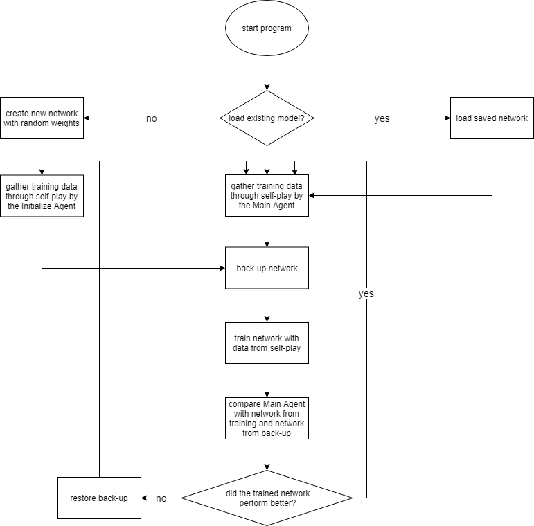
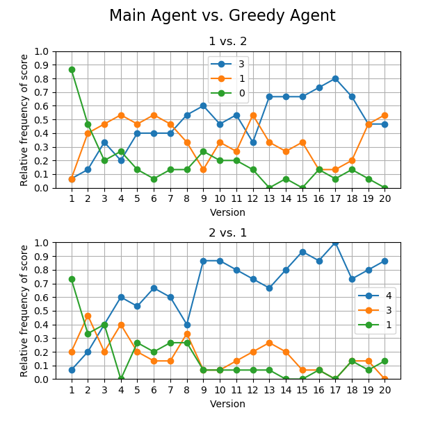
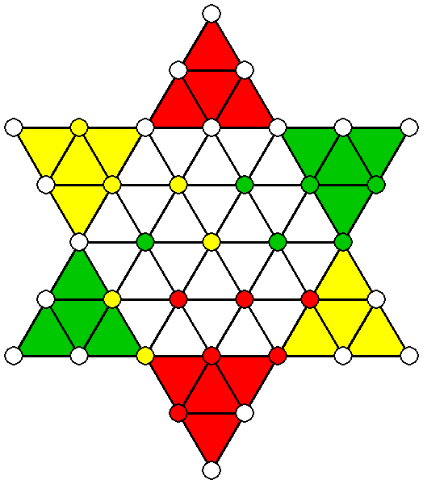
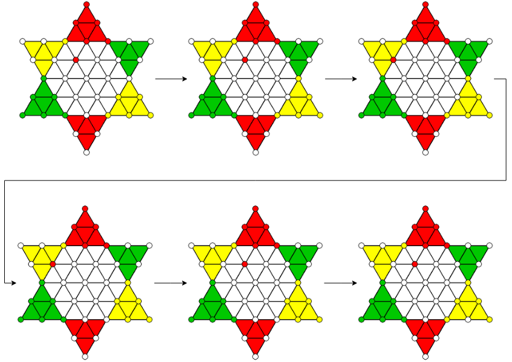

September 2019
Reinforcement Learning for 3-player Chinese Checkers
Training an AI agent to play 3-player Chinese Checkers using reinforcement learning techniques.
Introduction
Motivation
Like for many aspiring Machine Learning enthusiasts, the development of
AlphaZero could be described as the one event that made me sure, this is
the right field for me. I was curious how a program can learn such
sophisticated tactics in several domains just by playing against itself.
I researched the design of its algorithm and was fascinated by it, I
decided to dedicate my Bachelor’s thesis to experimenting with it.
The program is designed for learning a strategy for two-player zero-sum
games. But what would happen, if we break this assumption?
The game
As application, I chose a game I know since my childhood: the multiplayer board game Sternhalma (engl. Chinese Checkers). The goal of each player is to maneuver their figures from their designated starting zone across the board into their end zone before the others manage to do so. Players take turns and can try to advance their pieces but also block those of their opponents. The tactical core of the game is its jumping role which enables long sequences of movements across the board.
How it works
Monte-Carlo tree search and Neural Net
AlphaZero is the successor of AlphaGo and AlphaGo Zero, all developed by the research company Deep Mind. The program trains an agent that can surpass previous human as well as algorithmic agents without any prior knowledge about its domains, except for their rules. The domain that was used for its showcase is the board game Go.
The core of AlphaZero is the combination of a Convolutional Neural Network and a game tree which is traversed using a Monte-Carlo tree search. The game tree of complex games like Go grows so quickly that even algorithmically it becomes unfeasible to simulate all possible positions after even a few turns from the current game state. But why check every possible combination of plays when it is obvious that some of them are just bad? If we only knew which branches of the tree are even worth looking into. That is where Deep Learning comes into play. Given a game state, a neural network predicts how likely each player is to win, and which branches of the tree are worth looking into. This is incorporated in a Monte-Carlo tree search, which enables the program to navigate deeper into the game tree and find long-term strategies.
If you are interested in finding out more about the concept, visit the
official page by
Deepmind.
Another excellent resource is this explanation by Surag
Nair. The
corresponding Github repository of a simplified version of AlphaZero was
used as a basis for my project.
Self-Play
The agent’s training is carried out through self-play. We let the current version play against identical duplicates of itself. This results in played games, in which some moves lead to a better position while some moves lead to a loss. We let the agents play a fixed number of games and zip each played move together with the score it resulted in in the end and feed this as training data into the neural network. Thus, the network learns to favor moves that lead to a victory. After training a new version of the agent, we let it play against the current version and if it outperforms the status quo, it will be the new standard.

Results
Metrics
One of the metrics used to evaluate the agent is letting it play against a greedy agent. A greedy agent makes one of the moves that advance his pieces forward the most but does not plan ahead. Since we are evaluating in a 3-player game, we display both scenarios: 2 Alphas vs. 1 Greedy Agent and 1 Alpha vs. 2 Greedy Agents.

Tactics

It is also important to keep in mind that even though the board has
rotational symmetry, each player has a slightly different strategy, as
the order of moves is important.
Difficulties
Game Loops
A game loop is a sequence of moves by players that ends in the same game state it started in. Board games that are played competitively usually have rules that prevent these loops. For example, even in the game of chess where one could imagine such a sequence, the Fifty-move rule prevents game loops and endless play.
Sternhalma traditionally does not have rules to prevent game loops. This is especially problematic because a loop in the game destroys the one-directional structure of its game tree, through which we have to navigate. To fix this problem, I added such a rule to the game. However, the agents sometimes also found a workaround around that and exploited quasi-loops. Sequences that are not identical but lead to the same result. I added a second rule that terminates the game after a specified number of turns. In the graphic below, you can observe how the yellow agent tries to exploit a quasi-loop. Green has already won first place and Red only needs to bring one more figure into its end zone. Since Green realizes that it will lose the game, it decides to block Red in its end zone and drag the game on hopelessly instead of giving up and losing the game.

Exploration vs. Exploitation
Another difficulty is the right parameter that balances Exploration and Exploitation. This is an important tradeoff when learning a new task. In our case exploration means trying out new tactics that do not seem promising at first glance in the hope of finding a hidden ingenious move. Exploitation corresponds to a focus on moves that look promising and predicting which of them will have been the best many moves later in the game. In our game tree, those concepts are analogous to breadth-first and depth-first search. Our Monte-Carlo tree search contains a parameter that controls the balancing of both concepts. Finding the optimal value for this parameter is not trivial and greatly depends on the nature of the game. In this project, I experimented with different values, but it is difficult to determine its optimum
Learnings and Outlook
At the time I was a total beginner in Python and the field of AI.
Therefore, this turned out to be a very challenging project.
Nonetheless, it was a success resulting in a strong agent after 20
episodes of training. The bachelor’s thesis was well received and was
graded with a 1.0 (A+). It contains more details and explanations about
the project. You can read it here.
Looking back now at it, I see a lot of things I would do differently
now. This mainly concerns the implementation and structure of the code.
On the other hand, one can see this as a measure of how much I learnt
since.
The project also contains an implementation, in which the user can play
against one or several trained agents. In the future, I would like to
find a way to host this game online, as it can be a lot more impressive
to lose against the program than seeing its performance on charts.
Social